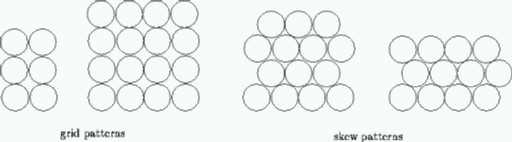
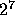
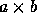
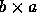

| Pipe Fitters |
Filters, or programs that pass ``processed'' data through in some changed form, are an important class of programs in the UNIX operating system. A pipe is an operating system concept that permits data to ``flow'' between processes (and allows filters to be chained together easily.)
This problem involves maximizing the number of pipes that can be fit into a storage container (but it's a pipe fitting problem, not a bin packing problem).
A company manufactures pipes of uniform diameter. All pipes are stored in rectangular storage containers, but the containers come in several different sizes. Pipes are stored in rows within a container so that there is no space between pipes in any row (there may be some space at the end of a row), i.e., all pipes in a row are tangent, or touch. Within a rectangular cross-section, pipes are stored in either a grid pattern or a skew pattern as shown below: the two left-most cross-sections are in a grid pattern, the two right-most cross-sections are in a skew pattern.

Note that although it may not be apparent from the diagram, there is no space between adjacent pipes in any row. The pipes in any row are tangent to (touch) the pipes in the row below (or rest on the bottom of the container). When pipes are packed into a container, there may be ``left-over'' space in which a pipe cannot be packed. Such left-over space is packed with padding so that the pipes cannot settle during shipping.
The input is a sequence of cross-section dimensions of storage containers. Each cross-section is given as two real values on one line separated by white space. The dimensions are expressed in units of pipe diameters. All dimensions will be less than  . Note that a cross section with dimensions  can also be viewed as a cross section with dimensions  .
For each cross-section in the input, your program should print the maximum number of pipes that can be packed into that cross section. The number of pipes is an integer -- no fractional pipes can be packed. The maximum number is followed by the word ``grid'' if a grid pattern results in the maximal number of pipes or the word ``skew'' if a skew pattern results in the maximal number of pipes. If the pattern doesn't matter, that is the same number of pipes can be packed with either a grid or skew pattern, then the word ``grid'' should be printed.
3 3 2.9 10 2.9 10.5 11 11
9 grid 29 skew 30 skew 126 skew